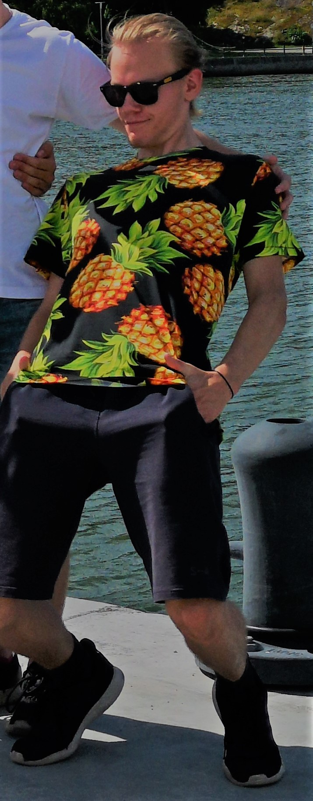

Mina framtidsplaner är att efter gymnasiet ska jag gå på högskola, helst vill jag gå på KTH med inriktning på data. Jag ska studera 5 år och få civilinjengör examen. Efter jag har tagit examen vill jag jobba inom ett konsult företag som programerare eller någon form av IT.
